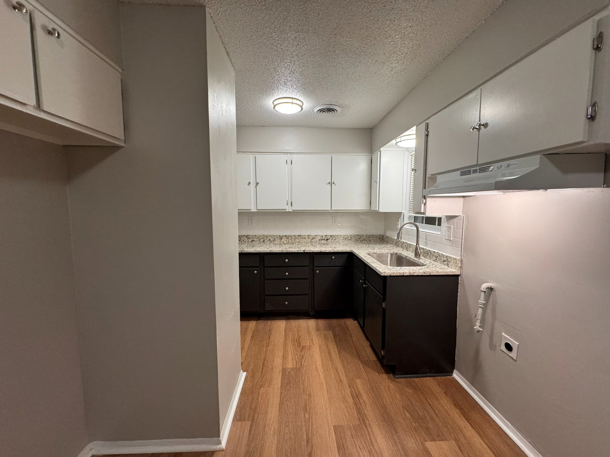
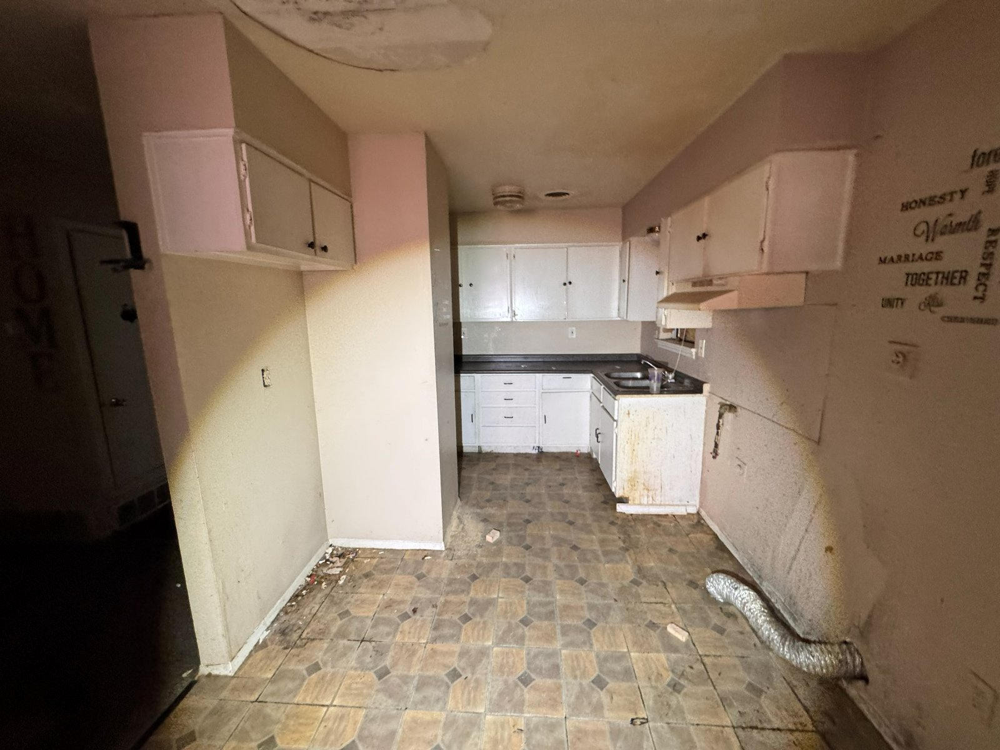
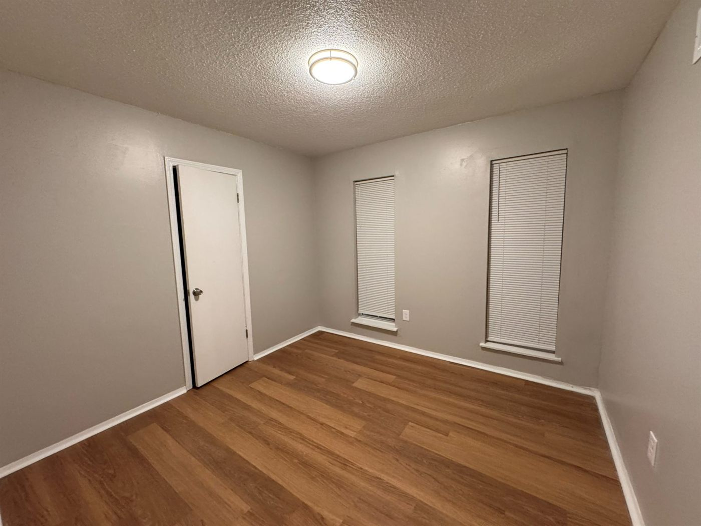
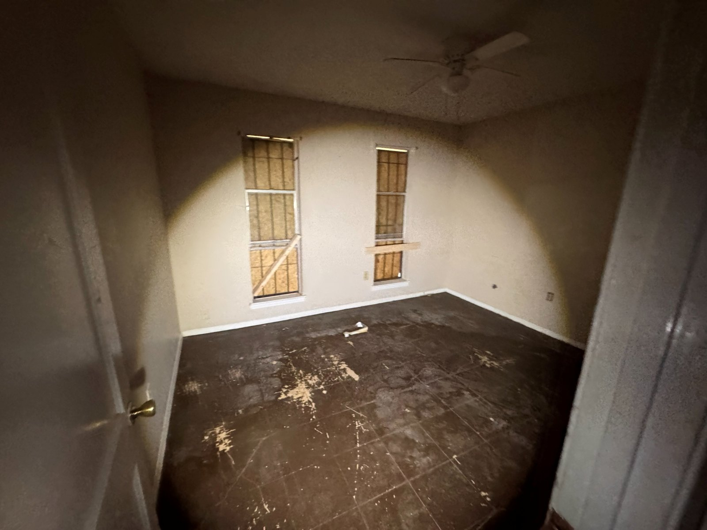
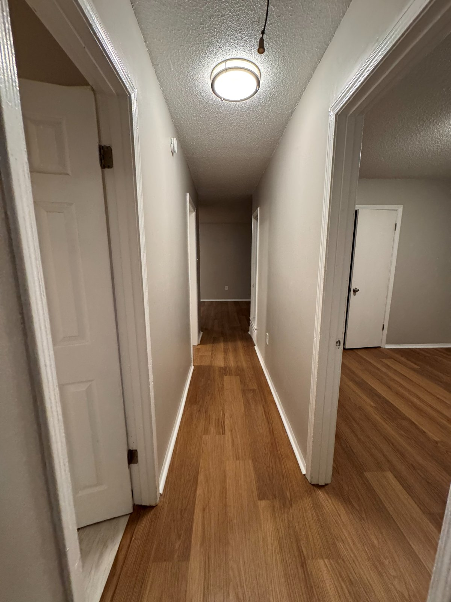
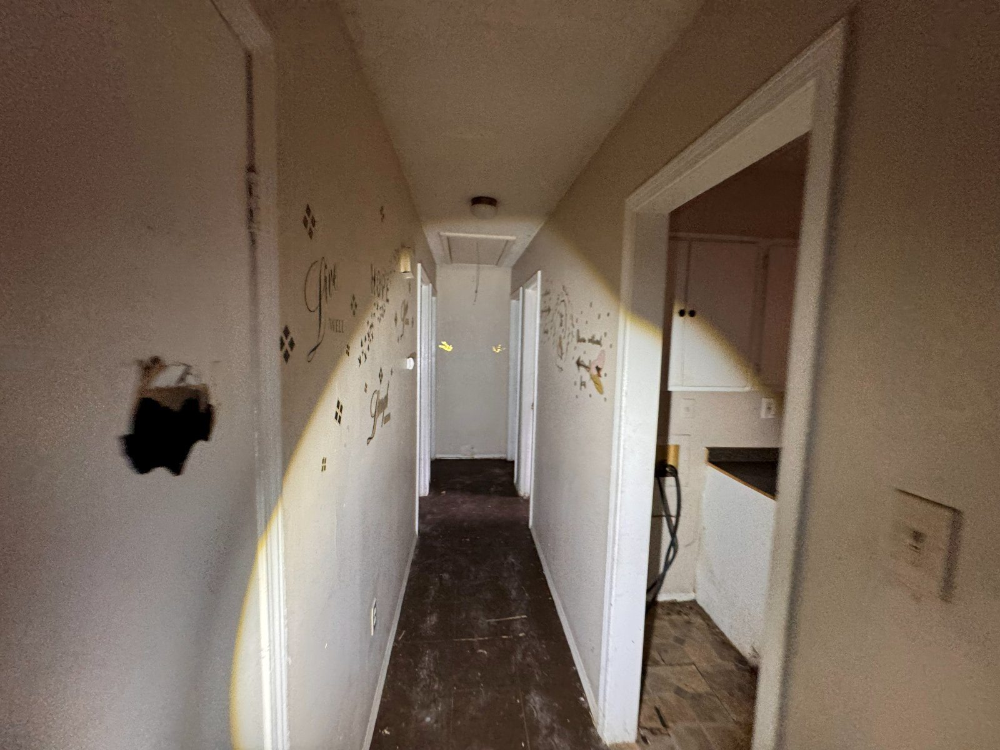

How a fire- and water-damaged Memphis property went from boarded-up and written off to a bright, move-in-ready home.

The rebuilt kitchen — the room that took the worst of the damage, and now leads the recovery.
At a Glance
Property Type
Single-family home
Scope
Full interior rebuild
Duration
8 weeks
Completed
2026
Services
Fire & water damage restoration, full kitchen rebuild, drywall repair, new flooring, paint, window restoration, lighting & fixtures, and more
The Challenge
Boarded Windows, Blackened Counters, a House Written Off
Some houses need a refresh. This Memphis property needed a rescue. Fire and water damage had left it in the kind of condition that makes most buyers — and plenty of contractors — turn around at the door. The kitchen ceiling was stained and bowed from water above. Countertops were blackened and unsalvageable. A cabinet hung on by little more than habit, and an exposed vent duct snaked across the wall where finished surfaces used to be.
The rest of the house carried the same story. Bedroom windows were boarded over with plywood, leaving rooms dark, shuttered, and unusable. Flooring throughout was stripped, stained, and past saving. In the hallway, a hole had been punched clean through the drywall, surrounded by peeling remnants of the home it used to be.
This is exactly the kind of project Delta takes on. We don't patch around damage like this — we take the interior down to what's structurally sound, remove everything that isn't, and rebuild from the studs out. The assignment: turn a property most people had written off into a home its next owner would be proud to walk into.
From written offto move-in ready
Rebuiltfrom the studs out
Every surfacefloors, walls, and ceilings redone
The Work
Three Spaces That Tell the Story
Drag each slider to compare the before and after. Same rooms, same walls — the difference is the rebuild.
01Kitchen

↔
BeforeAfter
The kitchen took the worst of it. Fire and water damage left a stained, bowed ceiling overhead, blackened countertops below, a cabinet barely hanging on, and an exposed vent duct running across the wall — unsalvageable as it stood. We took it back to what was sound and rebuilt the room top to bottom: crisp white upper cabinetry over deep espresso lowers, granite countertops, a subway tile backsplash, a new sink and faucet, a proper vent hood, and durable plank flooring underfoot. The ceiling was repaired and finished with new flush-mount lighting. What was once a total loss is now the brightest room in the house.
02Bedroom


↔
BeforeAfter
With its windows boarded over with plywood and its flooring stained and stripped past saving, this bedroom was dark, shuttered, and unusable. We removed the boards and restored the windows with new blinds, laid new plank flooring wall to wall, repainted in clean neutrals, and swapped the old ceiling fan for a bright flush-mount fixture. Natural light does the rest — it's a straightforward, thorough rebuild that turned a sealed-off room back into a bedroom.
03Hallway


↔
BeforeAfter
The hallway connecting the bedrooms to the kitchen had a hole punched clean through the drywall, peeling wall decals from a previous life, ruined dark flooring, and a bare bulb hanging where a fixture should be. We repaired the wall so cleanly you'd never find the patch, ran the same new plank flooring through to tie the rooms together, repainted top to bottom, and installed a proper flush-mount light. It's a small stretch of the house — and now it reads as a seamless connection between finished rooms instead of a reminder of what the property had been.
“This was the house nobody wanted to touch. Now it's the one people slow down to look at.”
Fire- and water-compromised material stripped out room by room, down to what was structurally sound — and nothing that wasn't.
Full Kitchen Rebuild
New upper and lower cabinetry, granite countertops, subway tile backsplash, sink, faucet, and vent hood.
Flooring
Ruined flooring replaced with durable new plank flooring, run continuously through the kitchen, hallway, and bedrooms.
Drywall & Paint
Punched-through and damaged drywall repaired seamlessly; walls, ceilings, and trim repainted in clean neutrals throughout.
Window Restoration
Boarded-over windows reopened and restored, finished with new blinds to bring natural light back into the bedrooms.
Lighting & Fixtures
Bare bulbs and dated fixtures replaced with clean flush-mount lighting in every documented space.
The Timeline
Assess → Demo → Rebuild → Finish
Every Delta project follows the same process — consultation, planning, construction, walkthrough. Here's how that played out on a property this far gone.
1
Assess
We walked the property room by room, separating what fire and water had claimed from what was still structurally sound — the line every other decision on this project came from.
2
Demo
Blackened countertops, failing cabinetry, compromised ceiling material, ruined flooring, and the boards over the windows all came out — down to the studs where the damage demanded it.
3
Rebuild
Ceiling and drywall repairs first, then the big installs: new kitchen cabinetry and counters, tile backsplash, restored windows, and new plank flooring run continuously through the house.
4
Finish
Paint, trim, blinds, lighting, and hardware — the details that make a rebuilt house read as a finished home — then the final walkthrough.
Curious about the full process? See how we work — consultation, planning, construction, walkthrough.
The Result
From Written Off to Move-In Ready
This Memphis property went from a house most people had given up on to a bright, clean, move-in-ready home. The kitchen that once summed up the damage now sums up the recovery — new cabinetry, granite counters, and a tile backsplash where blackened surfaces used to be. Bedrooms that sat sealed behind plywood are open to daylight again, and one continuous floor ties every rebuilt space together.
Just as important is what the rebuild removed: every fire- and water-compromised surface came out before anything new went in, so the finished home isn't covering damage — it's built on top of what was sound. That's the difference between flipping a distressed property and actually restoring one. We do the second kind.
Want Results Like This?
In math, delta means change. That's exactly what we deliver — a clear, honest estimate and a property transformed no matter how rough its starting point. Let's make the difference on yours.